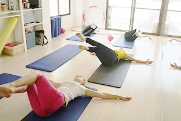
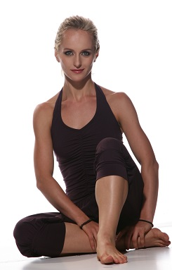

ナタカラピラティスとは
２０世紀前半に考案された身体フィットネスのメソッドピラティスを取り入れた、心も身体も無理なく取り戻すボディコンディショニングのスタジオです。
大きなスポーツジムとは違い少人数でのグループレッスンなど、ひとりひとりの身体の状態に適したレッスンを行っています。
エクササイズの種類としてはマットを利用した身体の中心と腹部、背部、四肢を満遍なく鍛えるマットエクササイズや、ピラティス専用の機械を使用して行うピラティスエクササイズなどがあります。
» ナタカラピラティスのレッスン紹介
ピラティスの効果
脊柱(背骨)や骨盤の結合調整や正常な位置に保ち治すこと、身体の中心を意識した調整能力やバランス感覚の向上の指導に重点をおいたボディコンディショニングです。
身体の体幹だけでなく四肢も含めた、筋力強化、柔軟性の向上、筋持久力の向上が期待できます。
近年では筋肉の緊張やバランスを調整し、その結果正しい姿勢や効率的な動きを学習できるためリハビリ目的でピラティスを取り入れるところもあります。
「ピラティス」とは
そもそもピラティスとは人の名前です。ジョセフ・ピラティスさんというドイツ人です。
くる病、喘息、リュウマチ熱など、身体が弱くいつも家で遊び、外で遊んでいる人をうらやましく見ていました。そして健康じゃないと幸せじゃない、強くなろうとボディービル西洋、東洋、古代ギリシャの養成法等色々やってみて、トレーニングしていき、身体運動を勉強していきます。
又ピラティスさんは第一次世界大戦で負傷してベッドから起き上がれない人たちに、自分の乳幼児の頃を思い出し,この人たちに教えたいと思いました。
そして起き上がらずともトレーニングができるベッドの機械を作りました。
このマシーンのおかげで、死亡率が下がり、自分の力で健康を取り戻していこうという人が増えます。

その功績がアメリカに広まりピラティスさんはニューヨークに渡りスタジオを持ち、怪我の方だけでなく、ダンサー、主婦、女優など、色々な人が集まりました。
全部で６００以上ものエクササイズを考案したと言われており、ボディ、マインド、スピリット、総合的で健康的なアプローチをしていきました。
ピラティスさんの信念、求めているものは、私たちがこれらのエクササイズをやる事で、均等に発達した身体の維持ができること、心身が健全になれることです。
Profile

私は カラサワ・ナタリヤです。
1980年にドイツで生まれました。元々はダンスの教師です。6歳の時にダンスを始め、そして15歳から19歳までプロのダンサーとしての訓練を受けながらダンスを教えていました。私の生徒は3歳から60歳まで幅広く教えていました。
長い間ダンスを踊っている間に背中、腰、膝に故障が出てきました。 そんな時にピラティスを耳にして取り組み始めました。すると、自分自身の故障が癒され、これは誰にとっても大変有効であると確信し、ピラティスのインストラクター養成コースに入りました。その後、2013年に三軒茶屋に ナタカラ ピラティススタジオ を開きました。
ピラティスはリハビリ、健康維持、ダイエットに大変有効です。
ピラティスを教えている間に皆様の体が良い方向に変化しているのを見つける事が大変うれしいです。